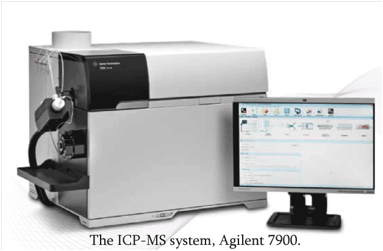
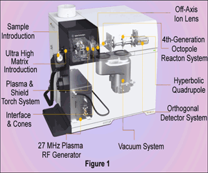
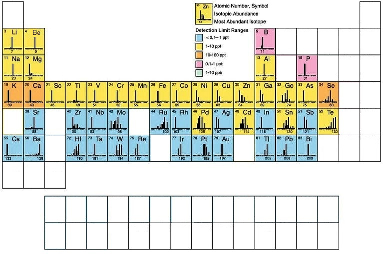

Brief on ICP-MS: Inductively Coupled Plasma Mass Spectrometry or ICP-MS is an analytical technique used for elemental determinations. The technique was commercially introduced in 1983 and has gained general acceptance because of its superior detection capabilities, particularly for the rare-earth elements (REEs). ICP-MS has many advantages over other elemental analysis techniques such as atomic absorption and optical emission spectrometry, including ICP Atomic Emission Spectroscopy (ICP-AES) are
An ICP-MS combines a high-temperature ICP (Inductively Coupled Plasma) source with a mass spectrometer. The ICP ionizes the atoms of the elements in the sample. These ions are then separated and detected by the mass spectrometer.

Figure1 shows a schematic representation of an ICP-MS. Argon gas flows inside the concentric channels of the ICP torch. The RF load coil is connected to a radio-frequency (RF) generator. As power is supplied to the load coil from the generator, oscillating electric and magnetic fields are established at the end of the torch. When a spark is applied to the argon flowing through the ICP torch, electrons are stripped off of the argon atoms, forming argon ions. These ions are caught in the oscillating fields and collide with other argon atoms, forming an argon discharge or plasma.
The sample is typically introduced into the plasma as an aerosol, either by aspirating a liquid or dissolved solid sample into a nebulizer or using a laser to directly convert solid samples into an aerosol. Once the sample aerosol is introduced into the ICP torch, it is completely desolvated and the elements in the aerosol are converted first into gaseous atoms and then ionized towards the end of the plasma. The most important things to remember about the argon plasma are:
• The argon discharge, with a temperature of around 6000-10000°K, is an excellent ion source.
• The ions formed by the ICP discharge are typically positive ions, M+ or M+², therefore, elements that prefer to form negative ions, such as Cl, I, F, etc., are very difficult to determine via ICP-MS.
• The detection capabilities of the technique can vary with the sample introduction technique used, as different techniques will allow differing amounts of sample to reach the ICP plasma.
•Detection capabilities will vary with the sample matrix, which may affect the degree of ionization that will occur in the plasma or allow the formation of species that may interfere with the analyte determination.
Brochure of the system
Application notes and other literatures

1. Registration process (One Time): New Registration for external users.User Verification: Upload photo of Front side and back side of valid Identity card issued by the organization (only .jpeg format, file Size less than 1 Mb, height less than 1000 pixels, width less than 800 pixels). Undertaking: Download the undertaking template ( Download Link ). Duly filled, signed and stamped form should be uploaded in .pdf format. Confirmation: An email will be sent to the user after verification of the documents.
2.Before planning to avail the Instrument facility of CRF IIT Delhi: user must visit https://crf.iitd.ac.in -> Facility -> select the desired facility from left side navigation list. Read carefully all the relevant information such as required sample type, testing charges and instrument location. Be prepared with details of the samples.
3.Log in and Click on Booking Appointment Tab: All the information relevant to testing must be filled in instrument booking form. In case user does not provide the required information the booking is liable to be rejected. User can upload the relevant existing data of their samples that might help in the measurements.
4.Sample submission & Payment Process: Once the application is submitted, the in-charge will verify the details and approve the request.External users must wait for the approval before making the payment and submitting the samples to concerned lab. After approval the payment should be made by the user. The payment transaction details need to be submitted online before appointment date time.
5.CRF Users can pay amount online using following details:
Beneficiary/Customer's Name: IRD ACCOUNT IITD
Bank Account Number: 10773572600
Bank Name: State Bank of India Branch Name: IIT Branch
Branch Code: 01077
NEFT IFSC CODE / RTGS: SBIN0001077
please write "CRF _Instrument Name" in the Remarks section while paying. Save the receipt file and upload in the crfbooking system online against your application.Payment can also made in form of demand draft in favour of " IRD ACCOUNT IITD " Payable at New Delhi.6.IIT Delhi
GST Number : 07AAATI0393L1ZI
PAN Number : AAATI0393L
1 Registration process (One Time): New Registration for internal users.
Fill in all the details in Personal Information, Supervisor Information and User Login Credentionals.
Once submitted, an email to supervisor is sent for activation of account. Once activated by supervisor, you can do the instrument bookings.
2 Before planning to avail the Instrument facility of CRF IIT Delhi: user must visit https://crf.iitd.ac.in > Facilities > select the desired facility from left side navigation list. Read ca  refully all the relevant information such as required sample type, testing charges and instrument location. Be prepared with details of the samples.
refully all the relevant information such as required sample type, testing charges and instrument location. Be prepared with details of the samples.
3. Log in on CRF Booking System and Click on Booking Appointment Tab: All the information relevant to testing must be filled in instrument booking form. In case user does not provide the required information the booking is liable to be rejected. User can upload the relevant existing data of their samples that might help in the measurements.
4 Sample submission & Payment Process: Once the application is submitted, the in-charge will verify the details and approve the request.